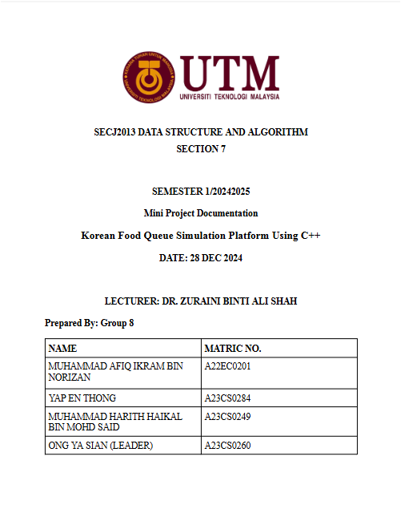

About Me
Hello! I'm Ong Ya Sian, a second-year Software Engineering student at Universiti Teknologi Malaysia. I'm passionate about building elegant, accessible, and user-friendly digital solutions. I thrive on solving problems and constantly learning new tools and techniques in web and software development.
Technical Skills
- Languages: HTML, CSS, JavaScript, C++
- Tools: Git, GitHub, VS Code, DevTools
- Concepts: OOP, Responsive Design, DSA
Interests
I love collaborating on team projects, exploring new technologies, and enjoying ramen with friends. Outside of coding, I value creativity, community, and continuous improvement.
You can find me on:
Ya Sian's Projects
Explore the side-projects I've worked on!
Portfolio Website
 A fully responsive and modern portfolio website created using HTML, CSS Grid, and JavaScript.
It includes structured layout components like reusable cards, a banner, a navigation toolbar, and an interactive image carousel.
The project demonstrates strong front-end development skills, attention to responsive design principles, and effective use of web standards.
A fully responsive and modern portfolio website created using HTML, CSS Grid, and JavaScript.
It includes structured layout components like reusable cards, a banner, a navigation toolbar, and an interactive image carousel.
The project demonstrates strong front-end development skills, attention to responsive design principles, and effective use of web standards.
Usability Performance Evaluation and Analysis Report

Conducted a usability evaluation for selected travel and transport digital platforms as part of the Human-Computer Interaction course (SECV2113, 2024/2025 Semester 1). This project enhanced my understanding of HCI principles, usability testing methodologies, and data analysis, while also contributing to my GitHub portfolio as a published technical report.
View Full ReportDSA - Mini Project
 This project, titled Korean Food Queuing Simulation Platform, is a C++-based system developed to simulate and manage customer queues in a Korean food restaurant setting. This project showcases the practical application of core data structure concepts, emphasizing FIFO queue operations, and highlights teamwork in building a functional, user-oriented solution.
View Full ReportYa Sian's Gallery
"The Best Moments Of 2025."